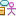
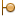
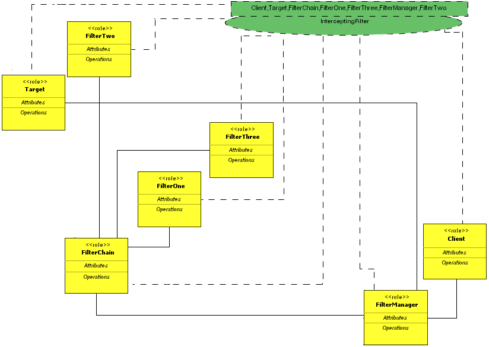

Once you have created a diagram, you are ready to build your pattern. This example covers building the Intercepting Filter pattern from the core J2EE patterns catalog.
First, be familiar with the types of modeling elements that are used when building patterns. The following table describes the usage for each of the element types:
| Icon | Name | Description |
|---|---|---|
|
Design Pattern | Denotes a commonly-recurring structure of communicating components that solves a general design problem within a particular context. |
|
Actor Role | Denotes an actor's role in the pattern. When applying the pattern to existing elements, only actors may be selected, or a new actor may be created to satisfy the role. |
| Class Role | Denotes the role of a class in the pattern. When applying the pattern to existing elements, only classes may be selected, or a new class may be created to satisfy the role. | |
|  | Classifier Role | Denotes a classifier's role in the pattern. When applying the pattern to existing elements, only actors, classes, interfaces or use cases may be selected. If a new element is created, the type to be created is based on the Type to Create preference. |
|  | Interface Role | Denotes an interface's role in the pattern. When applying the pattern to existing elements, only interfaces may be selected, or a new interface may be created to satisfy the role. |
| Use Case Role | Denotes a use case's role in the pattern. When applying the pattern to existing elements, only use cases may be selected, or a new use case may be created to satisfy the role. | |
|
Role Binding | Indicates that a role is participating in a pattern. |
Using the diagram below as a reference, you can build the InterceptingFilter pattern. Use the steps following the diagram to create the design pattern.

and click in the diagram. , click the Target role, and click the FilterManager role.
, click the Target role, and click the FilterManager role.Now the pattern is complete. In many patterns, you may want to add attributes or operations to your roles. You can add those just as you would add them to ordinary classes. See Working With Attributes and Working With Operations for more information.
You have finished building your design pattern. Now you can apply the pattern to your project or promote it to the UML Design Center.